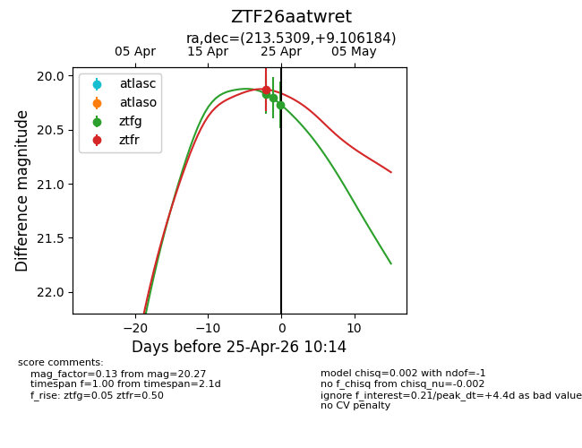
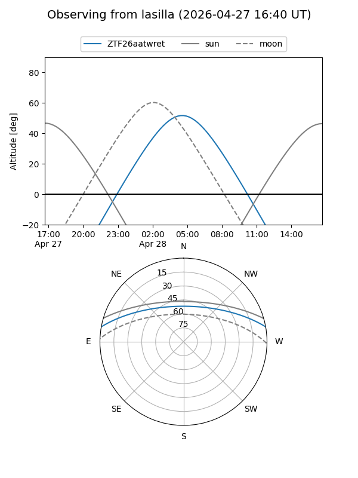
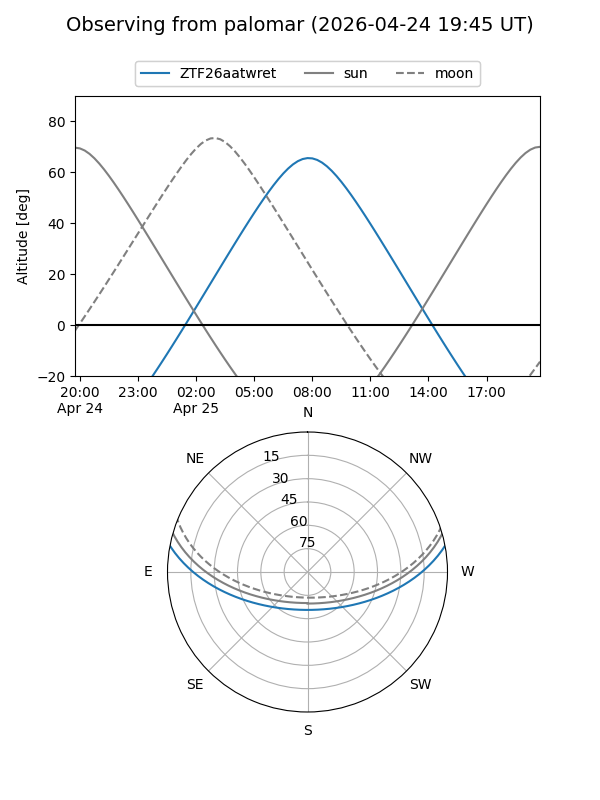
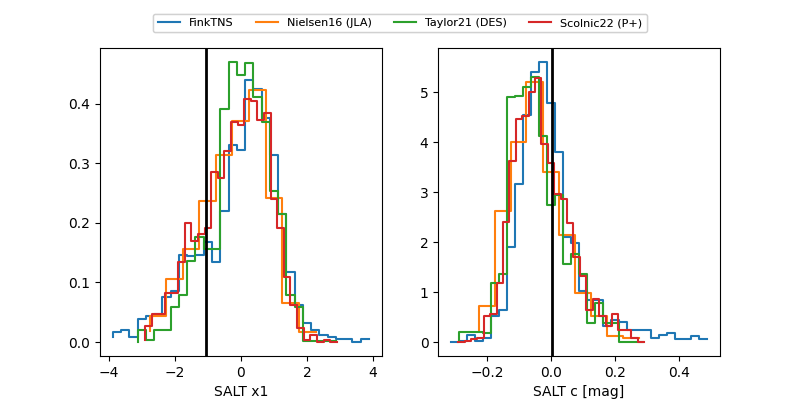

ZTF26aatwret
Target ZTF26aatwret at 2026-04-25 10:15
Aliases and brokers:
FINK: link
Lasair: link
ALeRCE: link
alt names
ZTF26aatwret (ztf,fink_ztf)
Coordinates:
equatorial (ra, dec) = 213.5309,+9.10618
equatorial (HMS+DMS) = 14:14:07.43,+09:06:22.26
galactic (l, b) = (354.1172,+63.42661)
Flags:
Photometry:
last ztfg=20.27, ztfr=20.13
3 ztfg, 1 ztfr detections
Lightcurve

Visibility


Additional plots
